alles is your
a private replacement for google's apps, built for one person. it runs on a machine you control, so your mail, calendar, files and passwords stay with you.
alles means everything
said AH-luss, like the german word. 12 apps in one place, for one person, in english, français, español, 简体中文, 繁體中文, 日本語, 한국어 or العربية.
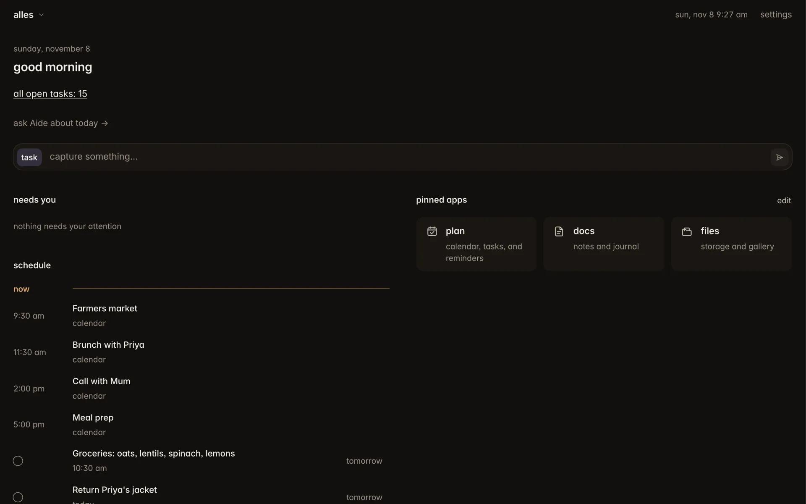
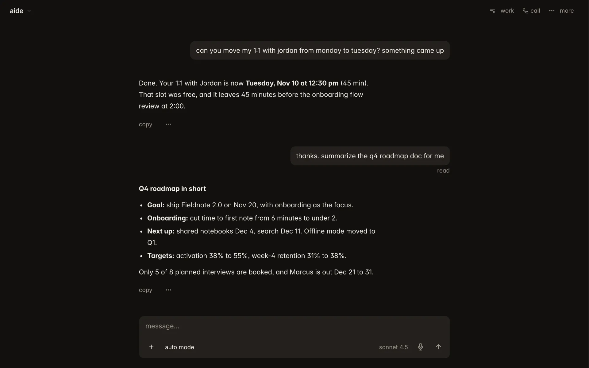
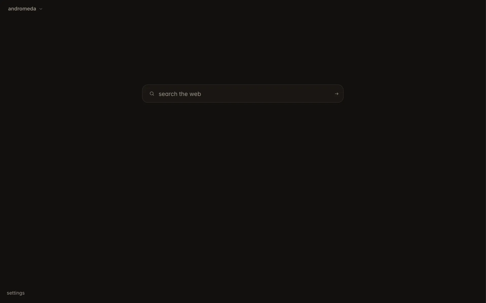
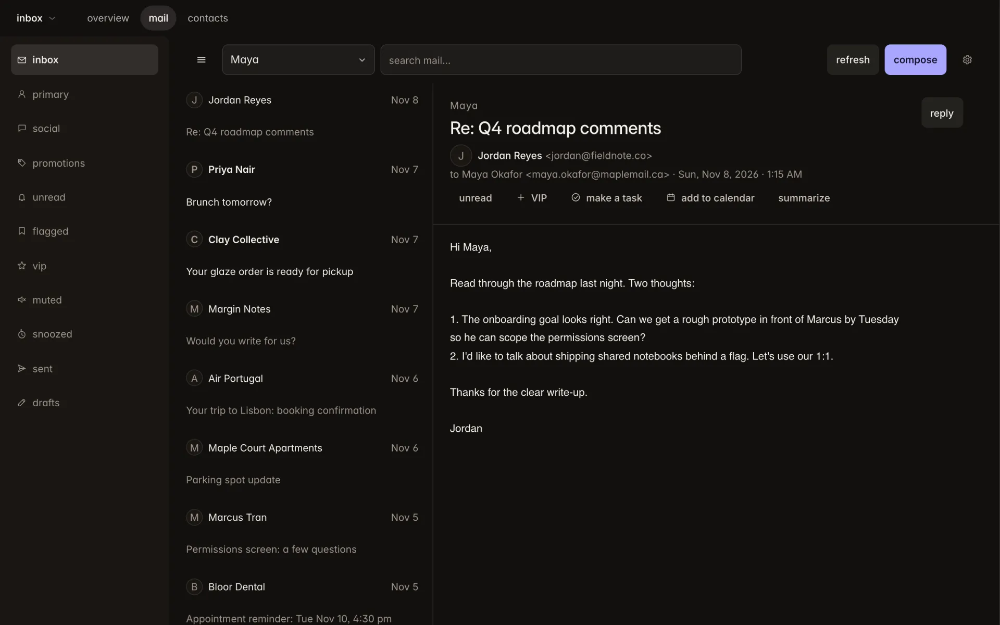
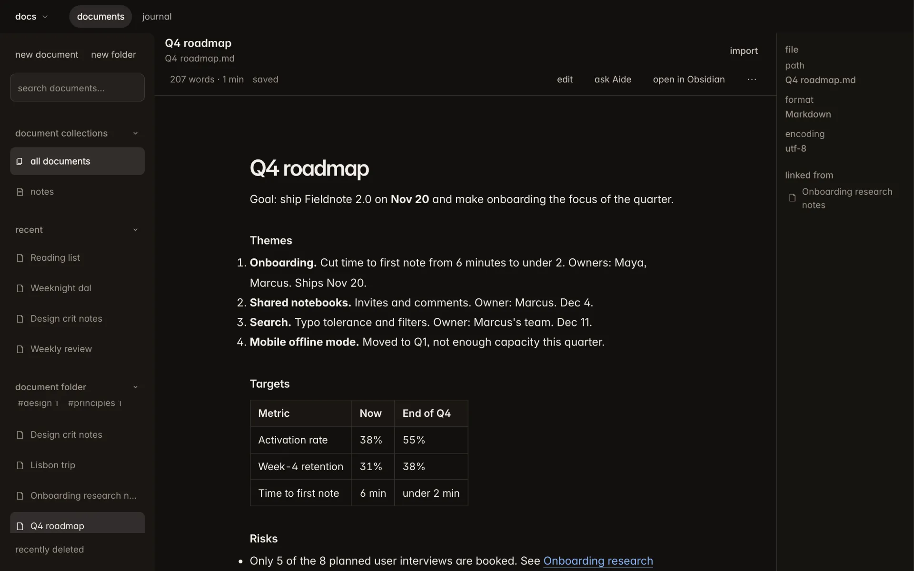
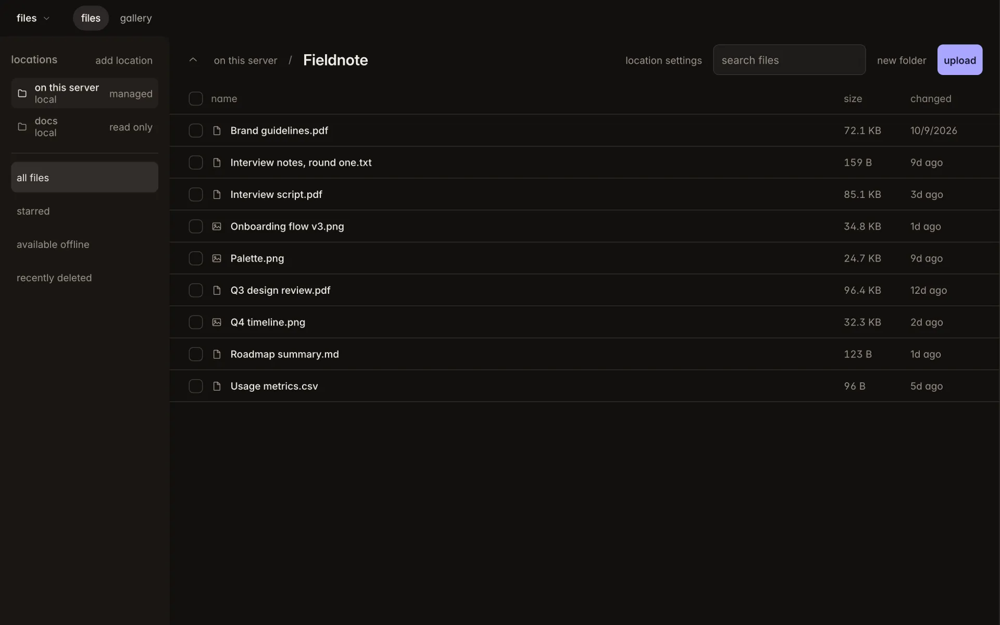
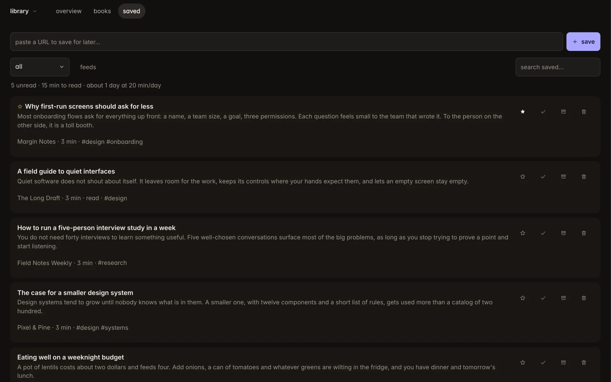
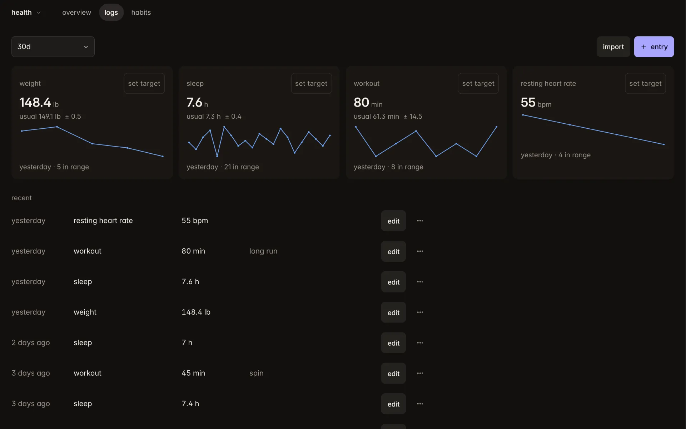
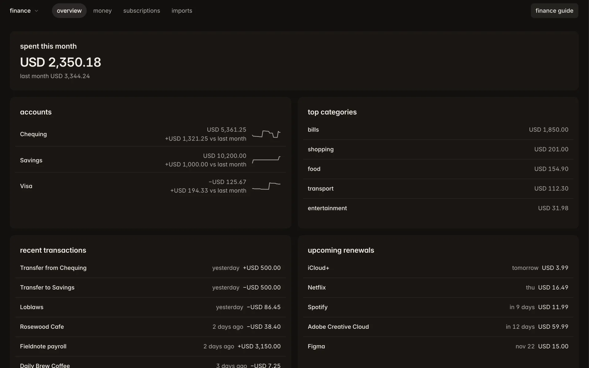
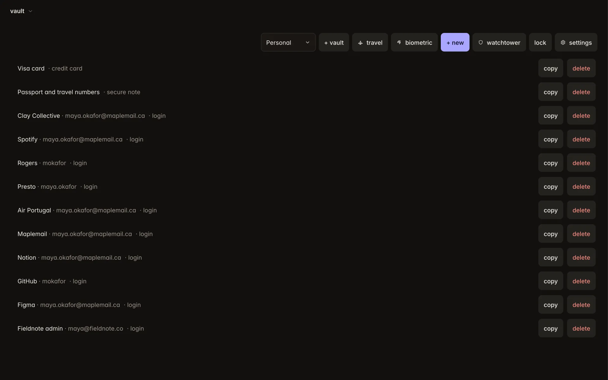
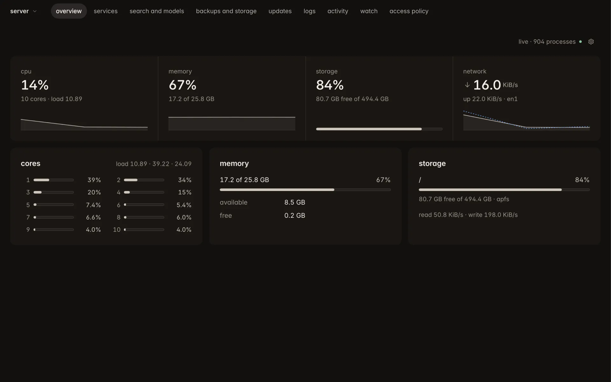
start small, turn on the rest
an assistant that asks first
aide works with your apps and waits for your ok before it changes anything. use any model you add, or a local one through ollama.
open it from your phone
alles access lan asks for an owner password, then prints the address your phone and laptop use.
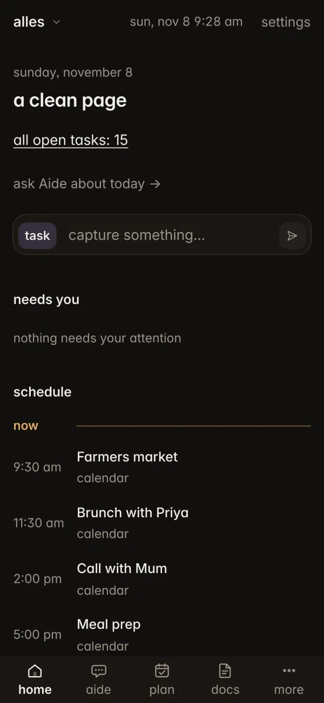
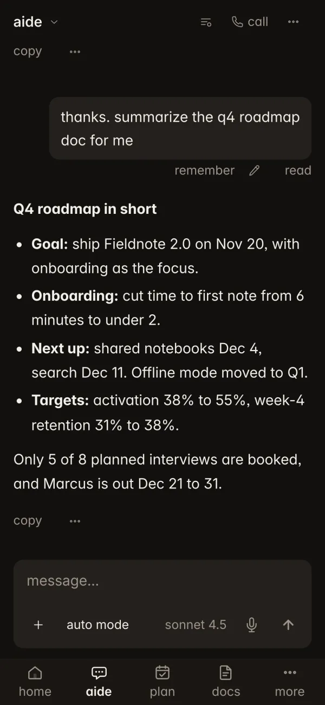
a backup every day
download an encrypted backup from settings whenever you want one, or send it to your own webdav or s3.
text aide from anywhere
aide stays inside alles and the terminal: alles ask and alles chat.
andromeda as your search
search the web from the andromeda app, with an optional cited overview.
your data stays on your machine
~/Alles/Docs- encrypted backups
- mit license
your docs and files live in ~/Alles, a folder you can open. the database stays out of view.
~/Allesopen it in finder, or in files- Docsnotes and journal, as markdown files
- Fieldnotea folder of your own
- Palette.pnganything you upload in files
~/Library/Application Support/Allesout of view, or ~/.local/share/alles on linux- datathe database, aide.db, and your settings
- backupsa daily encrypted backup when it's on, the last 7 kept
- runtimethis release and the one before, for a rollback
you choose which outside services it connects to. want it on an external drive? run the install from a folder there and everything goes into that folder.
back up from settings as an encrypted file, or send it to your own webdav folder or s3 bucket. keep the recovery key outside alles, so you can still get in if the app stops working.
install alles
first, paste one line
macos or linux, with python 3.11 or newer. it sets alles up as a background service that starts again after a restart.
curl -fsSL https://raw.githubusercontent.com/jxherc/alles/main/install.sh | sh then open it in your browser
open localhost:6769 and follow the setup. you don't need an api key to get started.
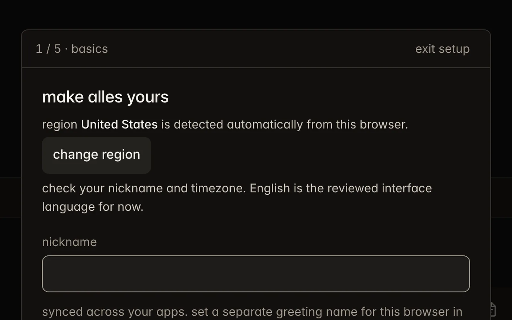
update, or go back
it gets the newest release and keeps the previous one, so a rollback takes you back, data included.
alles updatealles update rollbackfrom then on, just type alles
webdav
configuredyes
last backupyesterday, 3:12 am
last verifiedyesterday, 3:12 am
automatic local backup
enabledyes
last successtoday, 3:00 am
release and update status
release4e1d9b2 · installed nov 8, 9:41 pm
updatesup to date
alles | status, address and the everyday commands |
|---|---|
alles doctor | checks the install is ready |
alles ask "…" | one answer from aide, right in the terminal |
alles logs --since 1h | only the last hour of the log |
alles access lan | lets your phone and other computers open it |
alles access device | only this computer can open it again |
alles access domain | opens it at your own domain |
alles password | sets or changes the owner password |
alles update | gets the newest release and keeps a rollback |
alles update rollback | returns to the previous code and data |
alles backup | an encrypted backup of everything |
alles uninstall | removes alles, your personal data stays |